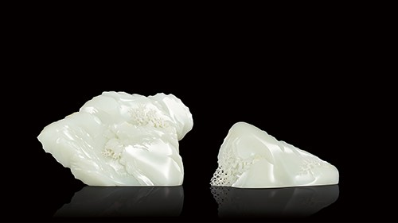

作者：瞿利军 中国玉石雕刻大师
规格：17.0×9.8×3.9cm 663g；13.5×6.6×4.5cm 283g
《夜宴—顶级玉雕艺术品专场》拍品

“负空间”即两峰间刻意为之的留白，既像一线峡谷纵深，又像一道山涧流出，使整体更加富于变化与层次感，留给观者无限的想象空间。这一特殊处理，拓张了实体雕塑的空间话语，丰富了作品的内涵与外延；正负空间互为作用，构成作品的和谐统一，更增添了无限灵气。
这样的设计与英国著名雕塑家亨利·摩尔的“孔洞理论”不谋而合——打破了“雕塑是被空间所包围的实体”的传统概念，对重新审视雕塑创作的本体有着划时代的意义。
在业内专家看来，“负空间”的表现手法不仅仅是技法，更多是艺术理念重新认知。瞿大师的这件作品是一件探索性的作品，或将是中国玉雕山子的一件节点作品。显然，能成为“节点作品”的作品并不多！